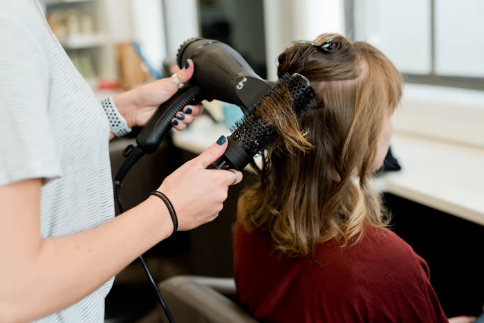
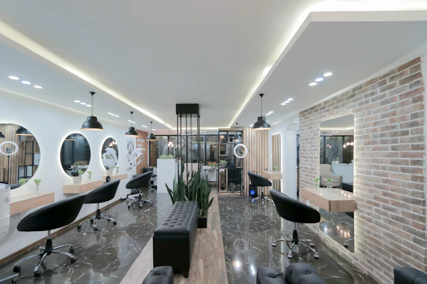
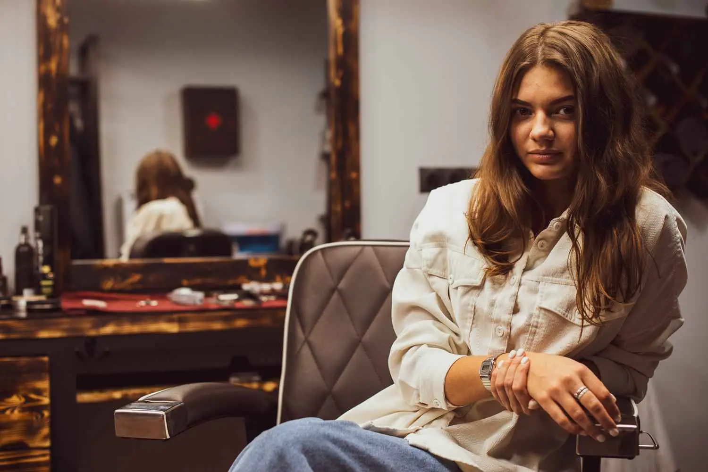
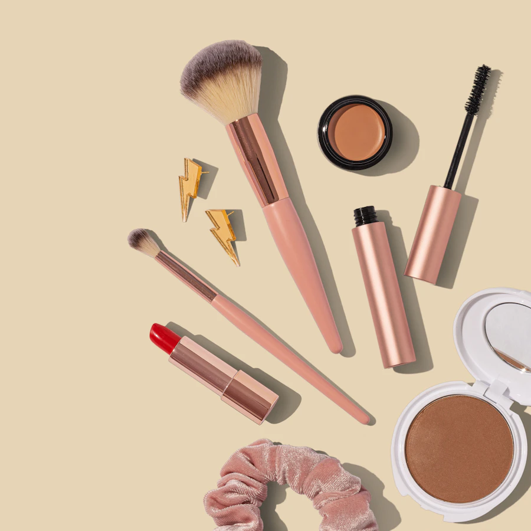
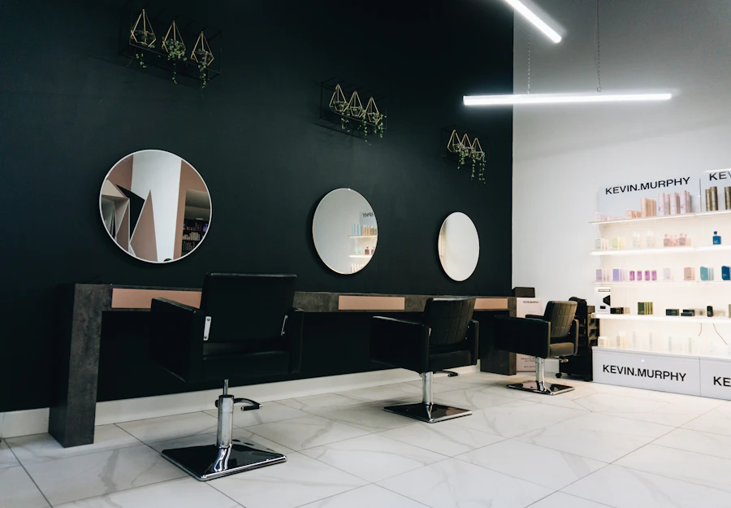

Two chairs above a tailor
Rhea rented a first-floor room with one basin, a borrowed dryer and a waiting list built entirely on her neighbours. The tailor downstairs took bookings when she had her hands in someone's hair.

About the house
Stackly started in a two-chair room above a tailor's shop in Salem. Twelve years later we've grown the floor, not the pace- the same consultation, the same tea, the same refusal to rush a colour because the next guest is waiting.
Read how it began
How it began
Rhea rented a first-floor room with one basin, a borrowed dryer and a waiting list built entirely on her neighbours. The tailor downstairs took bookings when she had her hands in someone's hair.
After a colour correction that should never have been started, we wrote the rule we still keep: nothing begins until the guest has heard the plan, the price and the honest alternative out loud.

Farah brought the Skin Atelier upstairs and rewrote every facial for Chennai humidity instead of a European brochure. Barrier first, extractions only on request.
Nineteen chairs across two floors, a quiet room at the back, and a rule that no stylist takes more than six appointments a day. Growth we could staff, not growth we had to advertise.

One address, fourteen people, and no plans for a second branch until the first one runs without us in the room. The waiting list is still mostly neighbours.
House principles
Open a panel to read the whole of it.
Every appointment opens with ten minutes of nothing but questions- what your hair has been through, what the week ahead asks of you, what you actually liked last time.
Length surcharge, extra product, a second appointment- you hear the full number at the mirror, not at the desk. If it changes mid-service we stop and ask.
Fewer chemicals, shorter ingredient lists, and the honest answer when your hair needs three months of rest instead of another service. We'd rather lose the booking than the hair.
The stylist who starts your appointment finishes it. No handing you to an assistant halfway through a colour, no chair-hopping to fit an extra booking into the hour.
You leave knowing how to recreate the finish with what you already own. Two products at most, and only if they change something we couldn't fix in the chair.
Guests through the door since Silk Route Avenue opened
People on the floor, including the two who mix every colour
Appointments a stylist takes in a day- the cap we don't break
Of this month's bookings are guests who have been here before
The people

Started Stackly at twenty-six with one basin. Still cuts four days a week and trains every new stylist herself.
Rewrote every facial on the menu for this climate. Will talk you out of a peel if your barrier isn't ready.
Mixes every formula at the chair so you can see it happen. Ten years of corrections taught her to go slowly.
Brought dry manicures to the house and hasn't cut a cuticle since. Books out three weeks ahead.
Inside the house


Mentioned in
We hire carefully and train for two months. If quality matters to you, tell us who taught you.